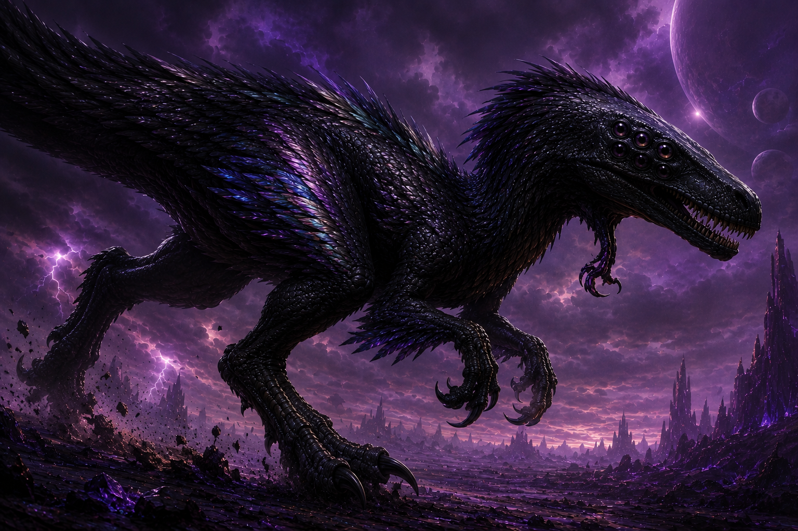
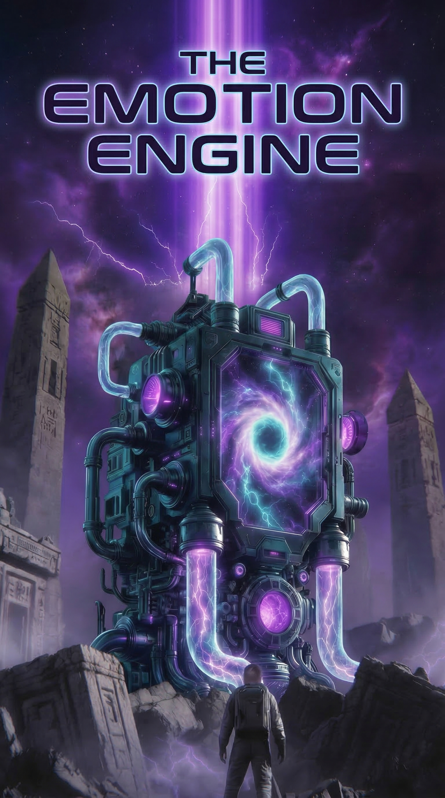

If you've been following along with my work, you know I tend to gravitate toward stories that explore the edges of human experience — those liminal spaces where technology, isolation, and identity collide.
I'm excited to share that my third novel, The Emotion Engine, is well underway and taking shape in ways that have even surprised me.
This one is science fiction again, but not the shiny, optimistic kind. The Emotion Engine follows Shaden Stewart, a solo mission commander sent through a wormhole to a distant, hostile planet on behalf of E.S.T.A. (the Earth Space and Time Agency). His vessel, The Sunbridge, deposits him on a world of frozen obsidian plains, violet skies, and storms that could tear the hull apart. The atmosphere is barely breathable. The wildlife is actively predatory. And Shaden? Shaden is trying to figure out why he can't feel much of anything at all.
What begins as a standard planetary survey quickly unravels into something stranger. Shaden discovers he's not the first human to set foot here. He finds the remnants of another camp, a damaged enviro-pod, and encrypted data drives marked with the initials H.R. and the symbol of a maroon hourglass. As Shaden pieces together logs — while being stalked by a massive apex predator he's taken to calling the velokai — he's forced to confront questions that have nothing to do with geology or atmospheric readings.

What This Story Is Really About
This is a story about emotional absence as much as physical survival. Shaden is a man who has spent his life treating experiences as data points. He eats because he needs fuel. He observes alien creatures with scientific detachment. He names things — hexlings, velokai, dinnerlings — because naming is easier than feeling. But this planet has a way of pressing against that armor. Whether it's the dream he has after eating cooked hexling meat (his first dream, he realizes), or the moment he hears voice data logs and finds himself smiling before he's even processed her words, the environment is doing something to him. Changing him.
Where the Manuscript Stands
Right now, the manuscript sits at five solid chapters, with a fully developed glossary and world-building framework in place. The planet has its own ecology, its own rules, and its own mysteries — including a sealed metal door in a cave system that may hold answers about why this world made contact with Earth in the first place. There's also the lingering presence of T.I.M.E., a dismantled criminal organization whose involvement raises the stakes from simple exploration to something far more conspiratorial.
I'm deep in the trenches with this one, and it's been a joy to write. The voice is different from my previous work. It's sparser, colder in places, but hopefully rewarding for readers who stick with Shaden as he learns to thaw.

I don't have a release date to share just yet — maybe around November — but the engine is running, and we're building momentum. I'll be posting updates as I move deeper into the second act, where Shaden's search for the fate of the other explorer — and for whatever is locked behind that cave door — pushes him further from his ship and closer to the heart of this planet.
Thank you for your patience, and for following along. This one means a lot to me.
—Charles